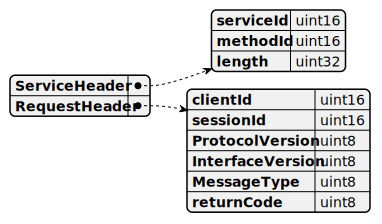
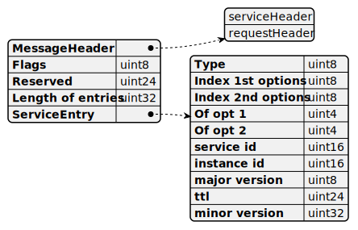
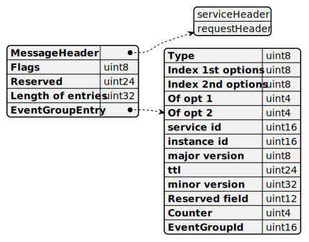
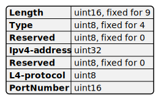
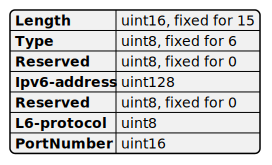
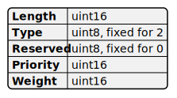

Scalable Service-Oriented MiddlewarE over IP
基于 IP 协议，面向服务的可拓展中间件协议
MessageCompoent

serviceId：当前的报文消息属于哪种服务
methodId：其最高位为 0 表示的是 method，最高位为 1 表示为 event 或者 notification
length：表示从这里开始的后面数据，总共占用多少个字节
clientId：用于区分同一个 ECU 上的不同 client
- 如果是不同 ecu 的，则需要通过 ip+port（fd）+clientid 进行分辨
sessionId：用于区分来自同一个 client 的多次请求
protocolVersion：用于确认 someip 协议栈本身的版本，默认为 1
interfaceVersion：用于表示上层接口的版本
messageType：表示当前消息的类型（ method，event，reponse）
returnCode：类似错误码或者 ok 码的机制
Communication
Event
server 向 client 发送 notification 通知，不需要 client 回复
R/R Method
request with response，client 向 server 发送 method 的 request，预期收到对端的 response
F/F Method
request without response，client 向 server 发送 method 的 request，不需要收到对端的响应
Field
细分为 get，set 和 notification，前两者等价于 r/r 的 method 和 f/f 的 method，后者等价于 event
ServiceDiscovery
只能为 udp 类型的报文，Sd 的报文头使用相同的报文头，但其中部分值是固定的：
- ServiceID 为 0xFFFF
- MethodID 为 0x8100
- ClientID 为 0x0000
- SessionID 初始为 0x0001，每发送一次数据后便加 1
- Protocol Version 为 0x01
- Interface Version 为 0x01
- Message type 为 0x02（Notification）
- ReturnCode 为 0x00（E_OK）
- flags 的取值有 None, Reboot, Unicast, ExplicitInitialData
ServiceEntry
一个 service entry 总共占用 16 个字节

Type：
- FindService (0x00)
- OfferService (0x01)
- StopOfferService (0x01)
Index First Option Run：Option Array 中第一个 Option 的索引
Index Second Option Run：Option Array 中第二个 Option 的索引
of opt 1：第一个 Option 使用的选项数
of opt 2：第二个 Option 使用的选项数
Service ID：表示该 Entry 所涉及的服务或服务实例的 Service ID
Instance ID：表示该 Entry 涉及服务实例的 Instance ID，如果包含一个服务的所有服务实例，则设置为 0xFFFF
Major Version：服务的主版本号
TTL：Entry 的生命周期，单位为秒
Minor Version：服务的次版本号
EventGroupEntry
一个 event group entry 总共占用 20 个字节

Type：
- SubscribeEventgroup（0x06）
- StopSubscribeEventgroup（0x06）
- SubscribeEventgroupAck（0x07）
- SubscribeEventgroupNack（0x07）
Index First Option Run：Option Array 中第一个 Option 的索引
Index Second Option Run：Option Array 中第二个 Option 的索引
of opt 1：表示从上述第一个 option 开始，总共使用多少个 option
of opt 2：表示从上述第二个 option 开始，总共使用多少个 option
ServiceId：表示该 Entry 所涉及的服务或服务实例的 Service ID
InstanceId：表示该 Entry 涉及服务实例的 Instance ID，任何实例的 Instance ID 都不能设置为 0xFFFF（这一点和在 Service Entry 中的不同）
MajorVersion：服务的主版本号
TTL：Entry 的生命周期，单位为秒
Reserved：应被设置为 0x000
Counter：用于区分同一订阅者的订阅事件组。如果不使用，设置为0x0
EventgroupId：事件组 ID
Ipv4Option


Ipv6Option


LoadBalancingOption

ConfigurationOption
用于额外传输一些定制化信息的

ServerInstance StateMachine
ClientInstance StateMachine
TransportProtocol
对于大包的数据，tcp 本身的协议特性，是支持分片的（流式协议）；但是 udp 是不支持的，所以需要应用层自行实现分片。

- 高 28 位，表示当前报文在 total message 中的偏移量是多少，因为后面 4 位用做了其他的功能，所以分片的长度，必须为 2^4 的倍数
- 中 3 位，为协议保留字段
- 低 1 位，表示当前报文是否为整个数据包的最后一包
Appendix
用于记载一些配置项的全部信息。
八股
- 为什么需要有 findservice，或者说，只监听组播，通过 offer service，就可以找到是哪个 endpoint 提供了这个 service 了？
- 缺乏实时性，offer service 是周期发送的，但可能 client 刚上线的时机，刚好是上一个 offerservice 发送完的时候，那么就需要等一个 gap 才能收到 offer service 了
- 或者说，上述的 gap 是可以尽可能的缩减，但这会造成总线上大量的无用消息发送
TodoList
- 将 someip 协议划分为 messagecompoent（消息组成），communication（通信接口），servicediscovery（端点发现）和 transportprotocol（消息分片）几个大的模块
- 文章的组成划分为协议的基本介绍（介绍协议原理），附录（一些配置项的全部信息）和八股（为什么协议需要这样设定，结合实际的一些场景进行分析）
- 需要参考 vsomeip，写一些 demo，wireshark 的抓包分析，后续可能会有源码分析